Data Collection
The nature of data: random variables
Data come from recording observations of the world. E.g.,
- recording the number of heart beats per minute
- counting birds in your yard
- measuring the lengths of fish you catch
Each time you collect one of these observations, it is likely to be different.
- Pulse may vary between 55 and 70 bpm, depending on when you record it
- Number of birds varies at different times, and across different yards.
We call these random variables (often denoted with an upper case letter, \(X\)), because the particular value that a single observation or measurement will take is uncertain. The value varies across observations.
Types of data
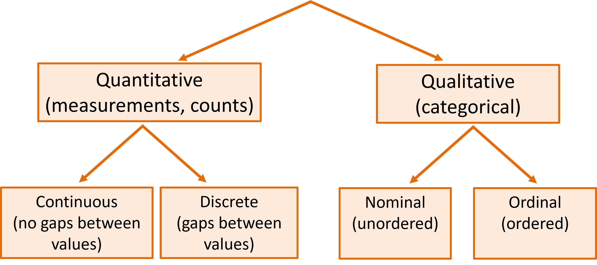
Subtypes of qualitative data
- Nominal variables have no particular order
(e.g., gender, colour, species, country)
- Ordinal variables can be ordered
(e.g., altitude = {low, mid, high},
age group = {child, juvenile, adult} )
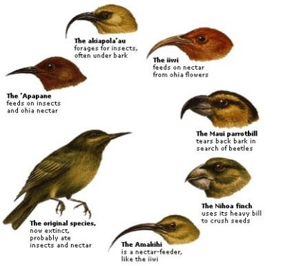
Subtypes of quantitative data
- Continuous variables have no gaps between possible values, as in measurements (e.g., weight, temperature, length)
- Discrete variables have gaps between possible values, as in counts (e.g., number of siblings, number of flowers)
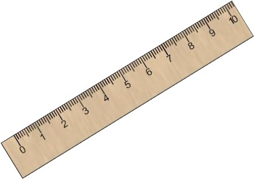
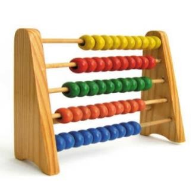
Subtypes of continuous data
Interval scale
- No absolute zero
- Division & subtraction may not be meaningful
- Temperature in degrees Celcius is interval because 20°C is not twice as hot as 10°C.
Ratio scale
- Zero = zero
- All arithmetic manipulation can be done
- Length is ratio because 20 mm is twice as long as 10 mm.
Data Collection: Survey, Experiment, Census
We collect data from the world to get information about patterns and processes.
Most datasets contain a subset, a sample, of a much bigger population of interest.
We may conduct a survey to collect a sample of data from different places, times, people, or organisms. We would rarely survey all of them.
We might conduct an experiment where we take a sample of elements (people, organisms, objects) and apply some treatment in a lab (e.g., drug, temperature, exercise regime, or other treatment) to study its effects.
If we are not dealing with a sample, if every element of the population of interest is represented in the dataset, we call this a census rather than a sample.
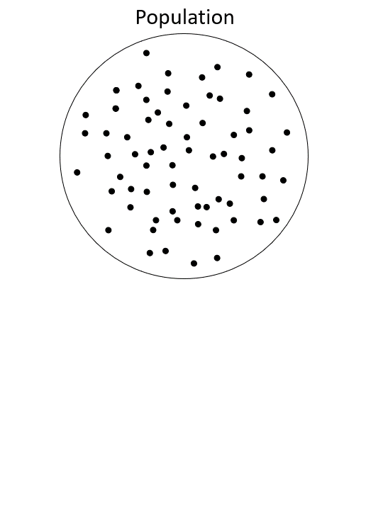
Measurement issues
Measuring Devices or Instruments
- a physical device - measuring rule to gauge the heights of plants
- a counting device - a Geiger- counter for measuring radioactive material
- a questionnaire - requires a more subjective response.
Measurement Error
- measuring instrument may be faulty (bias)
- values recorded from the same object may vary from one measurement to another (variance)
Indirect measures
- For example, we use Body Mass Index (BMI) as a measure of condition, and we measure temperature with the expansion of mercury.
Non-response
a non-sampling error
Selection stage: an element may be selected but not found
- e.g. sheep in a flock may be tagged with individual identification number but one may not be found at the time of the survey.
Collection stage: it may not be possible to take a measurement
- some respondents may forget, or refuse, to answer the questionnaire
Documentation stage
- Incorrect record of measurement
Call-backs reduce non-response
Census related concepts
TARGET POPULATION the population under study
FRAME operationalises data collection from a target population. e.g. listing of elements in population.
ACTUAL POPULATION is the resulting set of elements on which usable data have been collected.
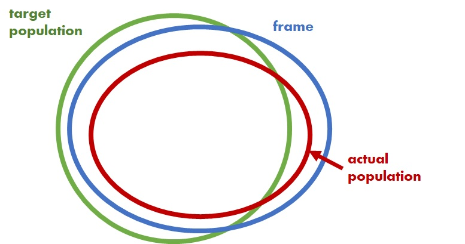
Sample vs population
A sample is a subset of the population.
Datasets usually only contain a sample from the population; rarely do we have the entire population of data!
Why sample?
- Sampling conserves resources (money, time, etc.).
- A well collected sample is more useful than a badly designed census.
- Collecting data may be destructive.
- The disadvantage: the statistics we calculate from sample data is subject to sampling variation, which introduces uncertainty* about their true values.
“You don’t have to eat the whole ox to know that the meat is tough”
– Samuel Johnson (1709-1784)
Population, frame, and sample
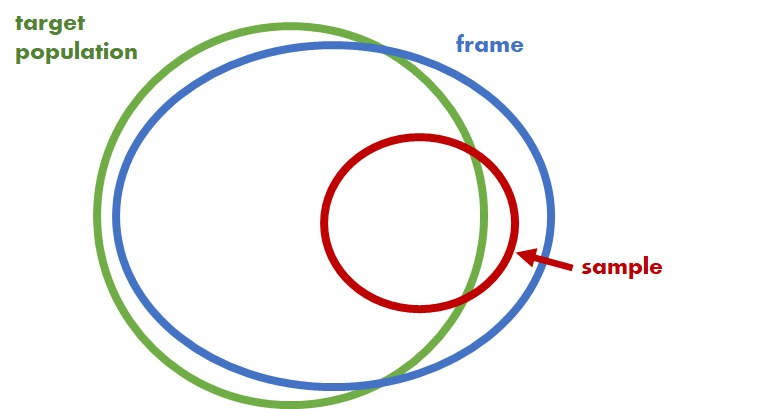
Statistical inference
Statistical inference is the process of using information from sample data to make conclusions about the population.
For example, we want to know \(\mu\), mean length of fish in a population. So, we collect a sample of fish, measure their lengths, calculate the mean \(\bar{x}\), and use \(\bar{x}\) as an estimate of \(\mu\). This is statistical inference.
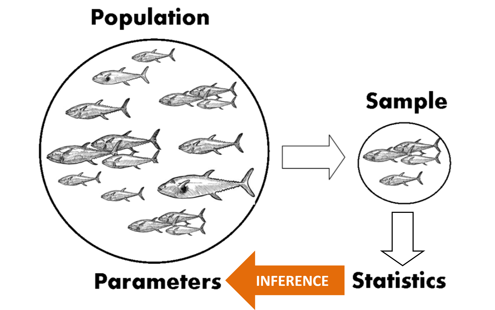
The sample mean \(\bar{x}\) depends on which particular fish we happened to get in our sample.
Therefore, the sample mean \(\bar{x}\) itself is a random variable.
If we were to take 1000 different samples, we’d get 1000 different means.
Bias vs sampling variance
A method used to estimate \(\hat{\theta}\) a population parameter \(\theta\) is called an estimator. An estimator includes the study design, methods of data collection, and mathematical operations.
Sampling variance is the sample-to-sample variation in an estimator.
Bias is when our estimator doesn’t get it right on average. That is, the average of estimates over \(\infty\) samples is not centred on the population parameter; \(\text{Mean}(\hat{\theta}) \neq \theta\).
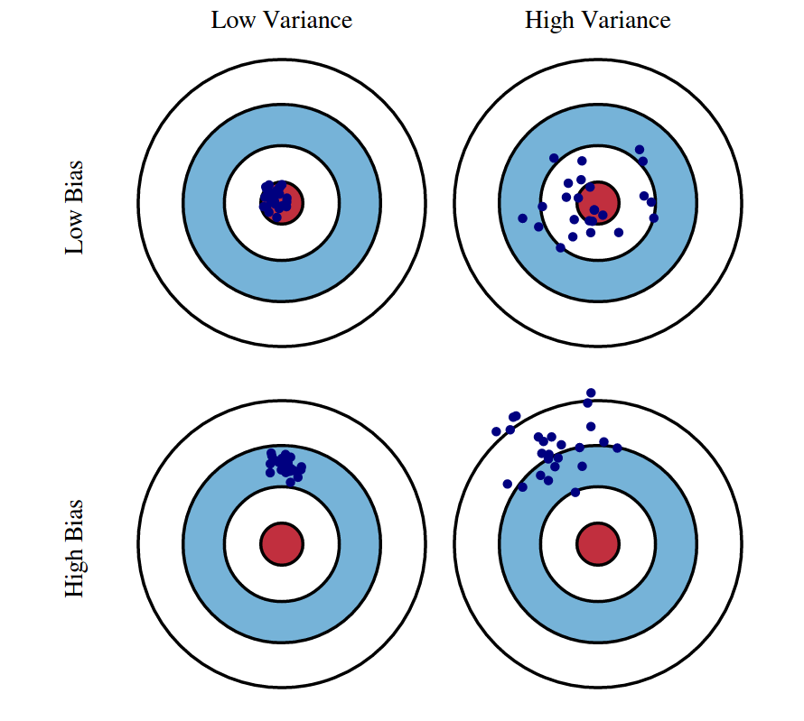
An estimator can have high/low sampling variance and high/low bias.
Principle of randomisation
We want our sample to be representative of (and have similar properties to) the population. The most straightforward way to do this is through randomisation.
We randomise the selection of objects for our sample to avoid bias. If we (consciously or subconsciously) tended to chose the largest fish for our sample, we’d get an upwardly biased estimate of the lengths.
Simple random sampling or EPSEM (equal probability of selection) is the gold standard of random sampling.
Simple Random Sampling (SRS)
Random selection of elements
- “Random” refers to the process not outcome
- Each (sampling) unit has same chance of being selected
- Units can be selected with & without replacement
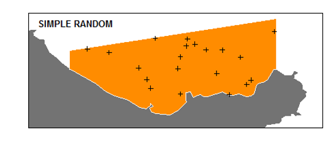
SRS is easy to handle; suits even for a poor sampling frame
SRS can be costly to implement
SRS estimates are more variable than some alternatives
Stratified Random Sampling (STRS)
Suitable for heterogeneous populations
Population is divided into relatively homogeneous groups called strata and a random sample is taken from each stratum.
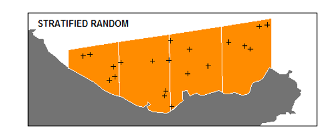
Sampling Approaches
- Sample the larger strata more heavily (suits when all the strata are equally variable)
- Sample the more varied strata are sampled
Advantages of STRS
- leads to efficient estimation That is, the variance (of an estimate) is usually less than that of SRS
- sample is spread throughout population
Cluster sampling
A convenient method of sampling
population is composed of clusters (groups)
Select certain clusters (randomly) and collect measurements from a random selection of the elements within the chosen clusters
Larger variance than SRS!
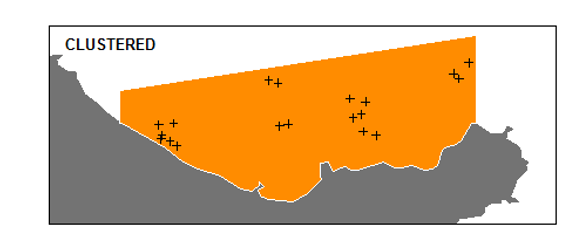
Systematic Random sampling (SyRS)
Select every \(k^{th}\) element!
Random start within the first block of elements.
Convenient and also the sample will be representative of population
Variance of estimates - generally greater than those of SRS
Inefficient/inappropriate, if cycle or trend is present
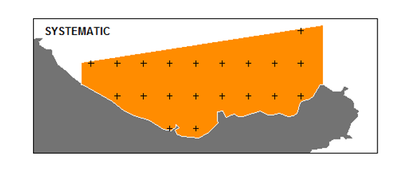
Other Sampling methods
Probability proportional to size (PPS)
- e.g., sampling high-value companies more likely than low-value companies
Multistage
- e.g., first stage - cluster; second stage - SRS
Non-probability sampling methods
- Haphazard / opportunistic / volunteer; take what you can get!
- Snowball; get your participants to find new participants
- Purposive; select items with certain characteristics; e.g., patients with particular symptoms
Non-probability samples are often treated as random, requiring the assumption that the sample is representative. The validity of this assumption should be carefully considered.
Some sampling methods
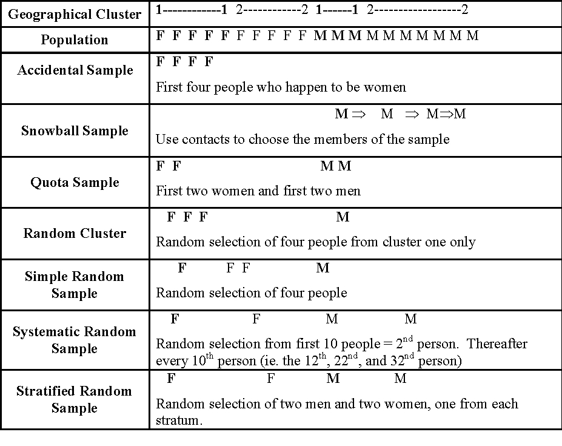
Effective Sample size (thumb rule)
| Sample Design | Design Effect (\(d\)) | Effective Sample Size (\(\frac{n}{d}\)) |
|---|---|---|
| SRS | 1.00 | \(n\) |
| STRS | 0.80 to 0.90 | \(\frac{n}{0.9}\) to \(\frac{n}{0.8}\) |
| Cluster | 1.02 to 1.26 | \(\frac{n}{1.26}\) to \(\frac{n}{1.02}\) |
| SyRS | 1.05 | \(\frac{n}{1.05}\) |
| Quota | 2 | \(\frac{n}{2}\) |
Summary
Issues to address
- WHAT are collected?
- WHO does the data collection?
- HOW are the data collected?
Bias occurs due to
- SELECTION
- COLLECTION
- NON-RESPONSE (the single largest cause of bias!)
A sample may have the same biases as a census along with sampling errors